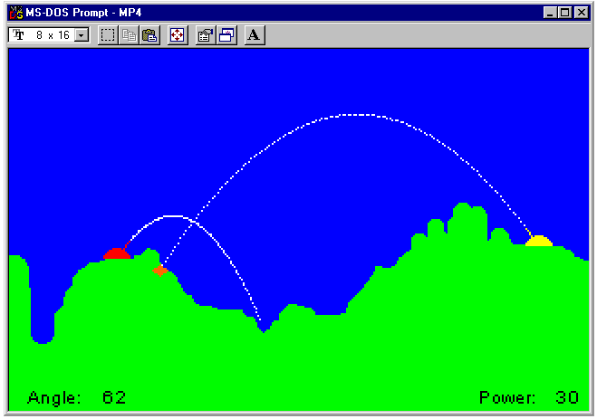

| ECE291 |
Computer Engineering II |
Moorman, Summer 1998 |
Machine Problem 4 & 5: Bomb
| Due Date | Friday 7/24/98 |
| Purpose |
VGA Graphics, Interrupts, Structures, Floating Point operations
|
| Points | 100 |

Introduction
In this MP we will be writing our own version of the classic computer game
'Bomb'. You may have seen more recent versions under the alias of 'Tank
Wars' or 'Scorched Earth'. Our version will be a simplified model but will
perform accurate calculations for the bomb trajectory according to
those fundamental physics equations you learned so long ago.
The main idea of the game is to destroy your opponent's tank by lofting bombs
that can cause damage to whatever they hit. Note that an exploding bomb
can damage your tank just as well as your opponent no matter who actually
shot it.
There are only two tanks involved in the game. The red tank is Player A
and the yellow tank is Player B. Each player will get to alternate
shots until someone quits the game ('q') or a tank has been destroyed.
Each time a tank is hit there is some damage done to the tank. This
reduces the amount of power that the tank can then use. When the power
has been reduced to zero, or in other words the tank is completely
damaged, then the game is over.
The game will also perform timer functions so that certain events can
be coordinated with real time. This includes the calculations for the
bomb trajectory, and a timer to hold explosions for a short period
of time before erasing them.
One final characteristic that will need to be implemented is the falling
ground effect. Whenever a bomb explodes in the ground some of the ground is
removed. The ground above this will then fall down to fill in the gap.
Because of the number of routines involved in this MP, and the short time
duration, we will split it into two parts. The first part will effectively
count as MP4 and the second part as MP5. This will then be worth a total
of double MP points (100). You will have the opportunity to receive half
of those points at the first checkpoint (MP4 due date) and the final
half of the points at the second/final checkpoint (MP5 due date).
The second part of the MP will involve a routine of your choice to enhance
the quality of the game. This will be judged on complexity, efficiency,
and overall quality.
In the second part of the MP you will NOT be allowed to use
library routines for the procedures that you demonstrated during the
first checkpoint. In other words at the second checkpoint all
routines should be your own.
Implementation
Your implementation of this program should follow that of the library
code. You will use mode 13h VGA graphics to display the necessary
graphics to the screen. All input will be through the keyboard. In this
MP we will be programming using the .486 model. With this
model we are able to use some things that we have not had access to up
to this point. This includes access to some extra segment registers
(GS and FS) which we will use in our graphics manipulation.
Your program should do the following:
- Display the 'BKGRND.PCX' file to the screen.
- Draw the two tanks onto their starting positions.
- Take user input to adjust the angle and power of the tank.
- Update the tank turret according to the tank angle.
- Display text and numbers to locations on the screen (Angle, Power)
according to the current player that is shooting.
- Perform a shot by using the time to find new velocity
and position calculations at each timer interval.
- Display shots to the screen and check bounds to not allow shots off
the top or bottom of the screen.
- Perform collision detection to tell when a bomb has hit an item.
- Draw and Erase explosions as needed.
- Calculate damage from explosions.
- Perform the ground falling enhancement.
- Check for a winner and exit when necessary.
Video Graphics
In order to reduce the amount
of screen flicker inherent in programs that use VGA graphics, we are going
to use double-buffering to draw on the screen.
After an entire image has been created, it will be quickly transferred
with the Update_Screen routine directly to the screen.
With this implementation, you don't see this image while it
is being changed.
Because one page of graphics alone requires 64,000 bytes of information,
more than one segment must be defined.
Three variables in different segments have been defined as follows:
- VBuf: A double-buffered "virtual" screen that holds
images as they are created.
- VScratchPad: A video scratch pad that holds our PCX data
including the tanks, the text messages, and the
numbers.
- ScratchPad: A temporary buffer used to hold PCX image data
during decoding.
A few steps are required to draw a video screen. We update all of
our video changes (bomb trajectories, explosions, falling ground) in
the VBufSeg in the respective routines by using needed pieces from
the PCX file stored in VScratchSeg. This buffer is
then blasted to actual video memory destroying whatever was currently
on the screen.
Image Data
It would be tedious to define images using assembly code.
It is much more convienient to create an image using a standard image
editor (such as CorelPHOTO-PAINT) and save the results in a file.
Our program then need only load this data when it executes.
For this MP, we will write the Load_PCX routine to
open and read a .PCX file; run-length decode it; then
save the uncompressed data in a memory segment.
DOS file services (software interrupts) are described in the lab
manual and in your textbook. (You will need to open a file,
point a register to the scratch segment, and issue the read command).
Details of the PCX image format are in
Lecture 22.
PCX files use a variation of Run-Length encoding.
A "run" of data corresponds to horizontal lines in the image.
Adjacent pixels that are the same value are compressed into two bytes, an
attribute and a length.
You will find some very helpful example PCX code in your lab manual.
Interrupt Timer
Remember that for the timer interrupt we need to chain or call the
default interrupt handler with our own code. This will allow us
to insert our code which we need to execute every 1/18 sec. while still
allowing the normal system timing functions to proceed.
Your Install_Timer routine is called to install a new
interrupt into the vector table. The Deinstall_Timer routine is
used to remove it (and restore the DOS default routine).
We will be using a few flags to communicate between the timer routine
IntTimer and the rest of our code. The timer routine will
look at the Shot_Flag to know when a current shot is in progress.
If a shot is running then every time tick (1/18 sec) the
Timer_Flag will be set so that the main code knows when a new
position calculation can be performed. The timer will also look at the
ExpCount to determine if an explosion is currently in progress.
If it is then the counter is decremented until it reaches 0. Once the
counter has expired the explosion can be removed with the Implosion
routine.
The final item the timer needs to take care of is the Fall of the
ground. This routine is called from the timer so that the ground has the
appearance of falling over time.
Physical Equations
The program tracks the velocity, and position of the
bomb along both the horizontal and vertical directions.
The bullet is considered to have a mass of 1.
The force in each direction can be calculated according to the
power and the angle. We use the fact that Force = Mass * Acceleration
to find the acceleration of the bullet in each direction. So we first
find force from the following:
Fx = Power * Cos(Angle)
Fy = Power * Sin(Angle)
We then divide by the mass to get the acceleration in one direction.
At all times, there is a gravitational field
accelerating the bomb downward at a rate of
9.81 meters per second squared (m/s^2). The net motion of the bomb
can be determined by summing the forces.
Recall that acceleration (A) is the time derivative of
velocity (V) and that velocity (V) is the time derivative of position (X).
For this problem, it is convienient to calculate the piece-wise integral
of acceleration to obtain velocity and the piece-wise integral of
velocity to calculate the position. Using Vi-1 as the
previous velocity and Xi-1 as the previous position,
new values of A, V, and X can be calculated at each instant of time
as shown below:
Ai = Sum of forces / Mass
Vi = Vi-1 + Ai * dt
X i= Vi-1 * dt + (1/2) Ai * dt2
Finally, recall that we will perform the calculation for each time tick
so that our dt = 1/18 sec.
User Interface
- Each player will use the keyboard to determine their shot. The up/down
arrows will change the power in the respective direction. The left/right
arrows will allow the angle to change. The range of power is from 0 to
MAX_POWER while the angle range is from 0-180. The use will also have
the option to quit at any time by using the 'q' key.
- The are two important data structure in the game which are defined using
the STRUCT command. The first structure, Sprite, is
for the CopySprite routine. It contains the (x,y) coordinates
in the source segment, the (x,y) coordinates in the destination segment,
and the height and width in pixels.
The second structure, Player is for actual player data. It
contains the players (x,y) coordinates, the tank color, the current
power and angle, and the Maximum allowed power (which will change as
the tank is damaged). These structures are used throughout the
routines in this MP.
- You are also given some tables in this MP for easier manipulation
of graphics. The table values are given to you in the program framework.
The first table is for converting the player angle into actual gun
turret pixels. The second table is the pixel positions for the
explosion according to the point of collision.
- The trail of the bomb as it travels through the air is drawn to the
screen pixel by pixel. You may leave this trail on the screen so
that we can more easily see the shot trajectory and compare to
subsequent shots.
- You will also need to check the bounds of the bomb as it is shot
through the air. The world we are using can allow shots to the left or
right on the screen, but you CANNOT allow shots above the screen to
be shown below the ground, or shots below the screen to be shown on the
top of the screen. In other words you can shoot left or right
across the screen and come out the other side, but you cannot shoot
out the top of the screen and come out the bottom or out the
bottom and come out the top. A shot that is out of range above the
screen still needs new positions calculated as it can still fall within
the screen range at a later time. A shot below, however, can never
come back above so it can be considered to be exploded once it goes
out of range below. To get a feel for how the
bounds checking works run the program a few times and try lofting
bombs off the screen. You may also want to use the different
PCX backgrounds supplied with the files so that the bounds testing is
easier.
- A sample screen shot is shown above. Your program should match this very
closely though it does not have to be exact. The location of tanks and
text are given as constants and are described below.
- Your program should be robust to all types of input.
Data Structures
- The following variables have already been defined for you in the program
framework.
- MainPCX: The background PCX file string
- PiecesPCX: The pieces PCX file string
- Old_Vector: A double word to store the interrupt
vector address that is removed from the interrupt
vector table. This is the routine that will still
need to be run every timer tick, and will be
put back into the vector table in the Deinstall_Timer
routine.
- Bomb_Angle: The current angle of the bomb. (Defined as a word
for floating point conversion.)
- Bomb_Power: The current power of the bomb. (Also a word for
FP conversion.)
- Bomb_Pos: The current position of the bomb.
- Shot_Flag: Variable to signify that a shot is in progress.
This is when position calculations will need to take place.
- Timer_Flag: Variable to signify that it is time to
calculate a new position for the current shot in progress.
- ExpCount: This is a counter that is decremented in the
timer interrupt until it reaches 0. It is used to know how
long to keep an explosion before erasing it from the screen.
- LastExpPos: The last position of the explosion. This is
used to know where to erase the explosion (Implosion) in
case the explosion timer has expired, or another explosion is
already in progess and we have not yet
removed the previous explosion.
- Fx: Floating point variable to hold the current shot Force
in the x-direction.
- Fy: Floating point variable to hold the current shot Force
in the y-direction.
- VelX: Floating point variable to hold the current shot velocity
in the x-direction.
- VelY: Floating point variable to hold the current shot velocity
in the y-direction.
- DisX: Floating point variable to hold the current shot displacement
in the x-direction.
- DisY: Floating point variable to hold the current shot displacement
in the y-direction.
- BOMBMASS: Floating point mass of a bomb.
- GRAVITY: Floating point acceleration due to gravity.
- VelSlice: FP => a*t = -0.545 ; -(1/18)*9.81
- TimeSlice: FP => (1/18) = 0.0555555556
- SqTimeSlice: FP => (1/2)*a*t2 =
-0.015138889 ; -(1/2)*9.81*(1/18)2
- RadConv: FP => 0.017453293 ; 2*Pi/360
Value to convert degrees to radians.
- Displ: Integer (word) variable to convert floating point
numbers into integers.
- PlayerA: Player structure for the Player A vital data.
- PlayerB: Player structure for the Player B vital data.
- PlayerAData: Sprite structure for the Player A Tank.
- PlayerBData: Sprite structure for the Player B Tank.
- AngleData: Sprite structure for the 'Angle:' text.
- PowerData: Sprite structure for the 'Power:' text.
- WinData: Sprite structure for the winning message text.
- NumberData: Sprite structure for the number digits.
- Angle_Table: Table of addresses for the various pixel
positions associated with each gun turret angle.
- TurretLength: The length in pixels of the gun turret.
- Turret22 - Turret0: 23 different turret positions
referenced with respect to the tank (x,y) coordinates.
- ExpLength: Number of pixels to plot for this explosion.
- ExpPos: Table of offsets of explosion pixels with respect
to the collision point.
- These constants have also been defined:
- VIDSEG == 0A000h
VGA Mode 13h video graphics.
- ROWWIDTH == 320
The respective width of a row in VGA Mode 13h. (Pixels/Bytes)
- SCREENSIZE == 64000
The number of pixels in one screen (320x200 with 256 colors)
- TANKWIDTH == 15
The width of each tank in pixels.
- TANKHEIGHT == 6
The height of each tank in pixels.
- Sec == 18
The number of clock ticks (timer interrupts) to equal 1 second.
This is only an approximation since the timer actually occurs
18.2 times/sec.
- PlayerA_X == 59
The initial x-position of Player A. (Column)
This value matches the PCX background file.
- PlayerA_Y == 115
The initial y-position of Player A. (Row)
This value matches the PCX background file.
- PlayerB_X == 292
The initial x-position of Player B. (Column)
This value matches the PCX background file.
- PlayerB_Y == 108
The initial y-position of Player B. (Row)
This value matches the PCX background file.
- PlayerA_Angle == 45
The starting angle for Player A.
- PlayerB_Angle == 135
The starting angle for Player B.
- MAX_POWER == 100
The initial maximum power for each player.
- Start_Power == 60
The actual initial power for each player.
- Damage == 2
The amount of damage that is cause per each tank pixel
that is hit during an explosion.
- Angle_X == 10
The initial x-position of the 'Angle:' text message. (Column)
- Angle_Y == 188
The initial y-position of the 'Angle:' text message. (Row)
- Power_X == 160
The initial x-position of the 'Power:' text message. (Column)
- Power_Y == 188
The initial y-position of the 'Power:' text message. (Row)
- TextWidth == 35
The width in pixels of each text message. This is taken from the
Pieces.pcx file.
- TextHeight == 10
The height in pixels of each text message. This is taken from
the Pieces.pcx file.
- NumberWidth == 10
The width in pixels of the individual digit numbers.
- NumberSpace == (NumberWidth/2) + 2
The spacing between digits displayed to the screen.
- BlankDigitX == 100
The position in the PCX file of a block of green for ground
that can be used to erase digits before writing new digits
to the screen.
- Red_Color == 00h
The value of the RED color that matches the PCX palette.
- Yellow_Color == 033h
The value of the YELLOW color that matches the PCX palette.
- Blue_Color == 0CCh
The value of the BLUE color that matches the PCX palette.
- Green_Color == 066h
The value of the GREEN color that matches the PCX palette.
- Orange_Color == 015h
The value of the ORANGE color that matches the PCX palette.
- White_Color == 0FDh
The value of the WHITE color that matches the PCX palette.
- Black_Color == 0FFh
The value of the BLACK color that matches the PCX palette.
- PlayerA_Color == Red_Color
Player A is Red.
- PlayerB_Color == Yellow_Color
Player B is Yellow.
- Sky_Color == Blue_Color
The sky is Blue.
- Gnd_Color == Green_Color
The ground is Green.
- Text_Color == Black_Color
Text is Black.
- Expl_Color == Orange_Color
Explosions are Orange.
- AExpl_Color == Expl_Color + 1
This is the explosion color to use for any pixels that
need to be colored on Player A. Even though these pixels will
appear the same to the human eye, they can later be restored to
the tank pixels original color since they are a different
palette number than the rest of the explosion. This is
a convenient trick often used in graphic programming.
- BExpl_Color == Expl_Color + 2
The is used in the same way as discussed above. In addition
this allows us to distinguish not just between normal
explosions and explosions that hit a player, but we can tell
which player is hit. Player B in this case.
- Traj_Color == White_Color
The trail left by the bomb trajectory.
- These structures have also been defined:
- Sprite
- SourceX = Source Segment X-position.
- SourceY = Source Segment Y-position.
- DestX = Destination Segment X-position.
- DestY = Destination Segment Y-position.
- Swidth = The width of the sprite in pixels.
- Sheight = The height of the sprite in pixels.
- Player
- Xpos = X-position of tank (centermost column).
- Ypos = Y-position of tank (lowest row).
- Color = Palette color of the tank.
- Angle = Current Angle of the tank gun turret.
- Power = Current Power level of the tank.
- MaxPower = Maximum allowed power. (Decreases with damage.)
Procedures
- This assignment has eighteen procedures.
You will receive credit for this
assignment by replacing each
procedures listed below with your own code. For the initial
demonstration you only need to hand in 50 pts worth of procedures.
You will have the option to choose which procedures you write
in which order. You must therefore carefully choose your
routines such that the inherent dependencies do not keep you
from demonstrating there functionality.
NOTE: IT IS YOUR RESPONSIBILITY TO BE ABLE TO SHOW THAT
YOUR PROCEDURES ARE FUNCTIONAL!
This means you will not be able to hand in a routine that you cannot
run and demonstrate to the TA. This may mean you need to write some
test code to show the functionality.
- The nineteenth procedure you will be required to generate on your own.
This will be for the second checkpoint handin. The routine should
add some functionality, be written efficiently, and be of
interesting and worthwhile value to the program. Some possible
examples are given below in the procedure definition.
- Experiment with the working code
to gain a full understanding of how the programs works.
- Your program should exactly match the functionality of the library
subroutines.
- All subroutines should be modular. They should use the stack to
preserve the value of any registers they may modify.
- Library routines only call other Library Routines.
Keep this in mind when testing your code with the given library code.
- CopySeg
- Purpose: To copy data from an entire segment to another segment.
- Inputs:
- ES = Source segment.
- GS = Destination segment.
- Outputs: GS segment is updated.
- Hints: You might try using string instructions.
- Calls: This function is called by Update_Screen.
- Points: 2
- Load_PCX
- Purpose: This procedure loads a PCX file into a segment. It
also reads and updates the palette.
- Inputs:
- CS:DX = Address of PCX file string.
- ES = Segment to store file.
- FS = Scratch segment for uncompressing PCX files.
- Outputs:
- ES segment contains the PCX file.
- Notes:
- You must uncompress this run length encoded file. For more
details see your lab book or lecture notes.
- Calls: This function is called by Load_Game.
- Points: 6
- CopySprite
- Purpose: This procedure copies a sprite of given size from
a source segment to a destination segment.
- Inputs:
- ES = Destination segment.
- GS = Source segment.
- CS:BX = Offset of sprite structure.
- [bx].SourceX = Source X-location (Column).
- [bx].SourceY = Source Y-location (Row).
- [bx].DestX = Destination X-location (Column).
- [bx].DestY = Destination Y-location (Row).
- [bx].Swidth = Sprite width in pixels.
- [bx].Sheight = Sprite height in pixels.
- Outputs: ES segment contains the sprite at the proper location.
- Description: This routine does a pixel by pixel copy in order to
only copy part of a PCX file to the screen buffer. In other words
you will use this to copy sprites from the VScratchSeg
into the VBufSeg.
- Hints: The first pixel that is read from the source segment
should be used as the transparent palette color. All other pixels
of this same color are not actually drawn to the destination
segment. Instead these pixels are ignored so that this color is
transparent in the copy.
- Calls: This function is called by Load_Game,
DrawNum, DrawText, and CheckWin.
- Points: 6
- Load_Game
- Purpose: Procedure to load the PCX files into the proper
segments and display the initial game to the screen. This includes
drawing the two tanks in the proper locations, drawing there
initial gun turret positions according to their respective angles,
and outputing initial text to the screen. The text consists of
both the 'Angle:' and 'Power:' messages along with the number digits
that correspond to the values of PlayerA, since this is the player
that will shoot first.
- Inputs:
- PlayerAData = Structure with initial player A sprite data.
- PlayerBData = Structure with initial player B sprite data.
- VBufSeg = Segment to hold the initial background PCX file and
to subsequently hold the video memory buffer. This segment is
where all video changes will be made and then the results will
be blasted to video memory with Update_Screen.
- VScratchSeg = Segment to hold the pieces PCX file for copying
different sprite information to the VBufSeg.
- FS = Segment to be used for PCX uncompression. (ScratchSeg)
- Outputs:
- VBufSeg = Holds 'BKGRND.PCX' and subsequent updates from copying
various sprites to the proper location.
- VScratchSeg = Holds 'PIECES.PCX'.
- ScratchSeg = Destroyed during uncompression.
- Hints: Constants have been defined for you regarding the sprite
positions in the PIECES.PCX file. If you are not sure about
positions, widths, or heights then load the PCX file into
a drawing program and look at the picture in units of pixels.
- Calls: Load_PCX, CopySprite, and DrawText.
- Points: 5
- Update_Screen
- Purpose: This procedure updates the Video Memory with
the contents of the video buffer segment.
- Inputs:
- VBufSeg = Source segment.
- VIDSEG = Destination segment.
- Outputs: VIDSEG contains a new copy of VBufSeg.
- Calls: Calls CopySeg
.
This routine is called by Player_Shot, Shoot,
IntTimer, and CheckWin.
- Points: 1
- DrawNum
- Purpose: This procedure draws a number to the screen at
a given location.
- Inputs:
- ES = Destination segment (VBufSeg).
- GS = Source segment (VScratchSeg).
- NumberData = Sprite Structure with information for a number digit.
- AX = Number to print.
- DI = Starting X-position.
- Outputs: The ES segment is updated with the new number digits
at the proper location.
- Notes:
- You should NOT draw leading zeros unless it is the last digit,
in which case only a single zero will be displayed to the
screen.
- The Y-position of the numbers is a constant that is already
defined in the NumberData structure.
- The functionality of this routine is very similar to that of
the library routine BinAsc. However, in this case
instead of displaying ASCII text to the screen you will
be displaying text sprites in VGA mode.
- Hints: You should first blank out the old numbers before
drawing new numbers to the ES (VBufSeg).
- Calls: Calls CopySprite.
This function is called by DrawText.
- Points: 5
- DrawText
- Purpose: This procedure draws the two text messages
'Angle:' and 'Power:' to the screen. It also makes sure
that the actual number values for the current players
angle and power are properly updated.
- Inputs:
- ES = Destination segment (VBufSeg).
- GS = Source segment (VScratchSeg).
- AngleData = Sprite Structure for 'Angle:' text.
- PowerData = Sprite Structure for 'Power:' text.
- Bomb_Angle = Current angle of active player.
- Bomb_Power = Current power of active player.
- Outputs: The desination segment (ES) is updated with the
text message sprites and the respective number digit sprites.
- Calls: Calls CopySprite and DrawNum.
This function is called by Draw_Gun and Load_Game.
- Points: 3
- Draw_Gun
- Purpose: This procedure draws the gun turret at the correct
angle for the current player.
- Inputs:
- DI = Address of Player Structure.
- ES = Segment to be updated (VBufSeg).
- GS = Segment to get text from (VScratchSeg).
- DL = Color of the turret
- Angle_Table = Address table for pixel offsets of different
turret positions.
- TurretLength = The number of pixels in a gun turret.
- Outputs:
- The gun at the new angle is drawn to the Destination
segment (ES).
- Bomb_Pos = End of gun turret (pixel offset).
- Bomb_Angle = [di].Angle (Player Angle).
- Bomb_Power = [di].Power (Player Power).
- Description: The Angle_Table has 23 different turret
positions. Since the range of our angle is 0-180 we can use
only some of the bits of the angle to access the table. This
can be done through shifting or division. Once the new address
is retrieved form the Angle_Table then this value can
be used to get the pixel offsets to draw to the screen. There are
a total of TurretLength pixels and there offsets are with
respect to the gun origin (X,Y) position in the lower middle line
of the tank.
- Notes:
- Don't forget to access Angle_Table as a word table.
- This routine also updates the text values on each call.
- Calls: Calls DrawText.
This routine is called by Player_Shot.
- Points: 6
- Player_Shot
Preliminary Procedure
Final Steps
- Print a copy of the MP4 grading sheet.
- Demonstrate MP4.EXE to a TA or to the instructor.
- Be prepared to answer questions about any aspect of the operation
of your program. The TAs will not accept an MP if you cannot fully
explain all operations of your code.
- Handin in your program by running:
A:\Handin YourWindowsLogin
- Print MP4.ASM using
GreenPrint32
- Staple the MP4 grading sheet to the front of your MP4.ASM file
and give both to the same TA that approved your demonstration.
MP4.ASM (Program framework)
TITLE Bomb - Your Name - Current Date
COMMENT %
ECE291 Bomb
--------------------
ECE291: MP4
Jay R. Moorman
University of Illinois, Dept. of Electrical & Computer Engineering
Summer 1998
Revision 1.0
%
;====== Model ============================================================
.MODEL COMPACT
.486
;====== Constants =========================================================
; General Constants
CR EQU 13
LF EQU 10
BEL EQU 7
VIDSEG EQU 0A000h
; Time constant
Sec EQU 18 ; 1 seconds at 1/18 increments
; Graphics constants
ROWWIDTH EQU 320
SCREENSIZE EQU 64000
TANKWIDTH EQU 15
TANKHEIGHT EQU 6
; Player Constants
PlayerA_X EQU 59 ; Initial position to fit PCX background
PlayerA_Y EQU 115
PlayerB_X EQU 292
PlayerB_Y EQU 108
PlayerA_Angle EQU 45 ; Range 0-180
PlayerB_Angle EQU 135 ; Range 0-180
MAX_POWER EQU 100 ; Maximum Power each player starts with
Start_Power EQU 60 ; Beginning Power of each player
Damage EQU 2
Angle_X EQU 10 ; Position of Angle Text
Angle_Y EQU 188
Power_X EQU 260 ; Position of Power Text
Power_Y EQU 188
TextWidth EQU 35 ; Width in pixels from PCX file
TextHeight EQU 10 ; Height " " " " "
NumberWidth EQU 10 ; Width of digits from PCX file
NumberSpace EQU (NumberWidth/2)+2 ; Number spacing on VIDSEG
BlankDigitX EQU 100 ; PCX position of green block to blank digit
; Colors have been defined to match the palette from the pcx files
Red_Color EQU 01h
Yellow_Color EQU 33h
Blue_Color EQU 0CCh
Green_Color EQU 066h
Orange_Color EQU 15h
White_Color EQU 0FDh
Black_Color EQU 0FFh
; Constants to match up palette colors with specific objects
PlayerA_Color EQU Red_Color
PlayerB_Color EQU Yellow_Color
Sky_Color EQU Blue_Color
Gnd_Color EQU Green_Color
Text_Color EQU Black_Color
Expl_Color EQU Orange_Color
AExpl_Color EQU Expl_Color+1
BExpl_Color EQU Expl_Color+2
Traj_Color EQU White_Color
; Public constants for library functions
PUBLIC Angle_X, Power_X
; Sprite structure for CopySprite routine
Sprite STRUCT
SourceX WORD ? ; Source x position (Source Seg)
SourceY WORD ? ; Source y position
DestX WORD ? ; Destination x position (Destination Seg)
DestY WORD ? ; Destination y position
Swidth WORD ? ; Width of Sprite
Sheight WORD ? ; Height of Sprite
Sprite ENDS
; Player structure for each players information
Player STRUCT
Xpos WORD ? ; x-position
Ypos WORD ? ; y-position
Color BYTE ? ; Color from palette
Angle BYTE ? ; Gun turret angle
Power BYTE ? ; Power
MaxPower BYTE ? ; Maximum allowed Power
Player ENDS
;====== Externals =========================================================
; -- LIB291 Routines (free) --
extrn binasc:near ; From lib291.lib (You can use these functions freely)
extrn dspout:near ; See your lab manual for a full description
extrn dspmsg:near ; of each function
extrn kbdin:near
extrn kbdine:near
extrn rsave:near
extrn rrest:near
extrn mp4xit:near ; Terminates Program
; -- LIBMP4 Routines (replace these with your own code) --
extrn CopySeg:near
extrn CopySprite:near
extrn Load_PCX:near
extrn Load_Game:near
extrn DrawNum:near
extrn DrawText:near
extrn Update_Screen:near
extrn Draw_Gun:near
extrn Player_Shot:near
extrn Install_Timer:near
extrn Deinstall_Timer:near
extrn IntTimer:near
extrn Shoot:near
extrn Collision:near
extrn Fall:near
extrn Explosion:near
extrn Implosion:near
extrn CheckWin:near
;====== Stack Segment =====================================================
stkseg segment stack
db 64 dup ('STACK ')
stkseg ends
;====== Video ScratchPad Segment ==========================================
; This segment will be used to hold the Pieces PCX file
VScratchSeg segment public
VScratchPad db 65535 dup(?)
PUBLIC VScratchPad
VScratchSeg ends
;====== ScratchPad Segment ================================================
; This segment is used when decompressing the PCX file
ScratchSeg segment public
ScratchPad db 65535 dup(?)
PUBLIC ScratchPad
ScratchSeg ends
;====== Video Buffer Segment ==============================================
; This segment is used to hold the screen buffer
VBufSeg segment public
VBuf db 65535 dup(?)
PUBLIC VBuf
VBufSeg ends
;====== Code/Data segment =================================================
cseg segment public 'CODE'
assume cs:cseg, ds:cseg, ss:stkseg, es:nothing, gs:nothing, gs:nothing
;====== Variables =========================================================
; PCX Files
MainPCX db 'BKGRND.PCX', 0
;MainPCX db 'BKGRND1.PCX', 0
;MainPCX db 'BKGRND2.PCX', 0
PiecesPCX db 'PIECES.PCX', 0
Old_Vector dd ? ; Old Interrupt vector
; Messages
crlf db CR,LF,'$'
; Buffers
PBuf db 7 dup(?)
; Variables for Bomb information
Bomb_Angle dw 0
Bomb_Power dw 0
Bomb_Pos dw 0
; Flag variables
Shot_Flag db 0 ; Flag to keep track of when a shot is in progress
Timer_Flag db 0 ; Flag to signal when to calculate a new position
; Explosion variable
ExpCount db 0 ; Keep count for when to turn off explosion
LastExpPos dw 0 ; Keep last Explosion position for removing
; Floating point equation variables and constants
Fx REAL4 0.0 ; Calculated x Force
Fy REAL4 0.0 ; Calculated y Force
VelX REAL4 0.0 ; Velocity in x direction
VelY REAL4 0.0 ; Velocity in y direction
DisX REAL4 0.0 ; Displacement in x direction
DisY REAL4 0.0 ; Displacement in y direction
BOMBMASS REAL4 1.0
GRAVITY REAL4 9.81
VelSlice REAL4 -0.545 ; -(1/18)*9.81 = a*t
TimeSlice REAL4 0.0555555556 ; 1/18
SqTimeSlice REAL4 -0.015138889 ; -(1/2)*9.81*(1/18)^2 = (1/2)*a*t^2
RadConv REAL4 0.017453293 ; 2*Pi/360
Displ dw 0 ; Variable to do floating to integer conversion
; Structure to use with copysprite - Initialized for each player
PlayerAData Sprite<0,0,PlayerA_X-(TANKWIDTH/2),PlayerA_Y-(TANKHEIGHT-1),TANKWIDTH,TANKHEIGHT>
PlayerBData Sprite<20,0,PlayerB_X-(TANKWIDTH/2),PlayerB_Y-(TANKHEIGHT-1),TANKWIDTH,TANKHEIGHT>
; Player structures with important data
PlayerA Player<PlayerA_X,PlayerA_Y,PlayerA_Color,PlayerA_Angle,Start_Power,MAX_POWER>
PlayerB Player<PlayerB_X,PlayerB_Y,PlayerB_Color,PlayerB_Angle,Start_Power,MAX_POWER>
; Sprite structures for printing Text messages
AngleData Sprite<0,10,Angle_X,Angle_Y,TextWidth,TextHeight>
PowerData Sprite<0,20,Power_X,Power_Y,TextWidth,TextHeight>
WinData Sprite<0,50,100,10,2*TextWidth,TextHeight>
NumberData Sprite<0,30,0,Angle_Y,NumberWidth,TextHeight>
; Public variables for library functions
PUBLIC MainPCX
PUBLIC Bomb_Angle, Bomb_Power, Bomb_Pos, Shot_Flag
PUBLIC Timer_Flag, ExpCount, LastExpPos
PUBLIC PlayerAData, PlayerBData, PlayerA, PlayerB
PUBLIC AngleData, PowerData, WinData, NumberData
; Table of Gun Turret positions according to angles
Angle_Table dw offset Turret0
dw offset Turret1
dw offset Turret2
dw offset Turret3
dw offset Turret4
dw offset Turret5
dw offset Turret6
dw offset Turret7
dw offset Turret8
dw offset Turret9
dw offset Turret10
dw offset Turret11
dw offset Turret12
dw offset Turret13
dw offset Turret14
dw offset Turret15
dw offset Turret16
dw offset Turret17
dw offset Turret18
dw offset Turret19
dw offset Turret20
dw offset Turret21
dw offset Turret22
TurretLength dw 5
Turret22 dw -8,-1,-1,-1,-1
Turret21 dw -(ROWWIDTH+8),-1,-(ROWWIDTH+1),-1,-1
Turret20 dw -(2*ROWWIDTH+7),-1,-(ROWWIDTH+1),-1,-(ROWWIDTH+1)
Turret19 dw -(2*ROWWIDTH+7),-(ROWWIDTH+1),-1,-(ROWWIDTH+1),-1
Turret18 dw -(3*ROWWIDTH+6),-1,-(ROWWIDTH+1),-(ROWWIDTH+1),-1
Turret17 dw -(3*ROWWIDTH+6),-(ROWWIDTH+1),-(ROWWIDTH+1),-(ROWWIDTH+1),-1
Turret16 dw -(4*ROWWIDTH+5),-(ROWWIDTH+1),-(ROWWIDTH+1),-(ROWWIDTH+1),-(ROWWIDTH+1)
Turret15 dw -(5*ROWWIDTH+4),-(ROWWIDTH+1),-ROWWIDTH,-(ROWWIDTH+1),-(ROWWIDTH+1)
Turret14 dw -(5*ROWWIDTH+3),-(ROWWIDTH+1),-ROWWIDTH,-(ROWWIDTH+1),-ROWWIDTH
Turret13 dw -(6*ROWWIDTH+2),-(ROWWIDTH+1),-ROWWIDTH,-(ROWWIDTH+1),-ROWWIDTH
Turret12 dw -(6*ROWWIDTH+1),-ROWWIDTH,-(ROWWIDTH+1),-ROWWIDTH,-ROWWIDTH
Turret11 dw -(6*ROWWIDTH),-ROWWIDTH,-ROWWIDTH,-ROWWIDTH,-ROWWIDTH
Turret10 dw -(6*ROWWIDTH-1),-ROWWIDTH,-(ROWWIDTH-1),-ROWWIDTH,-ROWWIDTH
Turret9 dw -(6*ROWWIDTH-2),-(ROWWIDTH-1),-ROWWIDTH,-(ROWWIDTH-1),-ROWWIDTH
Turret8 dw -(5*ROWWIDTH-3),-(ROWWIDTH-1),-ROWWIDTH,-(ROWWIDTH-1),-ROWWIDTH
Turret7 dw -(5*ROWWIDTH-4),-(ROWWIDTH-1),-ROWWIDTH,-(ROWWIDTH-1),-(ROWWIDTH-1)
Turret6 dw -(4*ROWWIDTH-6),-(ROWWIDTH-1),-(ROWWIDTH-1),-(ROWWIDTH-1),-(ROWWIDTH-1)
Turret5 dw -(3*ROWWIDTH-7),-(ROWWIDTH-1),-(ROWWIDTH-1),-(ROWWIDTH-1),1
Turret4 dw -(3*ROWWIDTH-7),1,-(ROWWIDTH-1),-(ROWWIDTH-1),1
Turret3 dw -(2*ROWWIDTH-7),-(ROWWIDTH-1),1,-(ROWWIDTH-1),1
Turret2 dw -(2*ROWWIDTH-7),1,-(ROWWIDTH-1),1,-(ROWWIDTH-1)
Turret1 dw -(ROWWIDTH-8),1,-(ROWWIDTH-1),1,1
Turret0 dw 8,1,1,1,1
; Table of oblong explosion
ExpLength dw 31
ExpPos dw -3*ROWWIDTH
dw -(2*ROWWIDTH+1),-2*ROWWIDTH,-(2*ROWWIDTH-1)
dw -(ROWWIDTH+3),-(ROWWIDTH+2),-(ROWWIDTH+1),-ROWWIDTH,-(ROWWIDTH-1),-(ROWWIDTH-2),-(ROWWIDTH-3)
dw -4, -3, -2, -1, 0, 1, 2, 3, 4
dw (ROWWIDTH-3), (ROWWIDTH-2), (ROWWIDTH-1), ROWWIDTH, (ROWWIDTH+1), (ROWWIDTH+2), (ROWWIDTH+3)
dw (2*ROWWIDTH-1), 2*ROWWIDTH, (2*ROWWIDTH+1)
dw 3*ROWWIDTH
; Table of round explosion
ExpLength1 dw 25
ExpPos1 dw -3*ROWWIDTH
dw -(2*ROWWIDTH+1),-2*ROWWIDTH,-(2*ROWWIDTH-1)
dw -(ROWWIDTH+2),-(ROWWIDTH+1),-ROWWIDTH,-(ROWWIDTH-1),-(ROWWIDTH-2)
dw -3, -2, -1, 0, 1, 2, 3
dw (ROWWIDTH-2), (ROWWIDTH-1), ROWWIDTH, (ROWWIDTH+1), (ROWWIDTH+2)
dw (2*ROWWIDTH-1), 2*ROWWIDTH, (2*ROWWIDTH+1)
dw 3*ROWWIDTH
; ======== Your Code ======================================================
; -- Write the code for your subroutines below --
; == Main ================================================================
MAIN Proc NEAR
; Initialize DS register
mov ax, cseg
mov ds, ax
; Initialize other segment registers
mov ax, VBufSeg ; es = VBufSeg
mov es, ax
mov ax, ScratchSeg ; fs = ScratchSeg
mov fs, ax
mov ax, VScratchSeg ; gs = VScratchSeg
mov gs, ax
finit ; Initialize floating point unit
; The Main Program Code
mov AX, 0013h ; Get in Mode 13 (VGA)
int 10h
call Install_Timer ; Install Interrupt time
call Load_Game ; Load initial game to screen
mov di, offset cs:PlayerB
mov dl,cs:PlayerB.Color ; Initialize PlayerB
call Draw_Gun
mov di, offset cs:PlayerA
mov dl,cs:PlayerA.Color ; Initialize PlayerA
call Draw_Gun
call Update_Screen ; Display results
MainLoop:
mov di, offset cs:PlayerA ; Player structure address
mov dl,cs:PlayerA.Color ; PlayerA color
mov cx,2 ; Perform Main loop once as
; PlayerA and once as PlayerB
Inner_MainLoop:
call Draw_Gun ; Update gun and text
call Player_Shot ; Get new angle/power
cmp ax,0 ; Check if we need to exit
jne Exit
call Shoot ; Let PlayerA/B shoot
call CheckWin ; See if anyone has won
cmp ax,0 ; If so then exit
jne Exit
mov di, offset cs:PlayerB ; Player structure address
mov dl,cs:PlayerB.Color ; PlayerB color
loop Inner_MainLoop ; Now do PlayerB
jmp MainLoop ; Do Outer Loop
Exit:
cmp ExpCount,0
jne Exit ; Wait until finished exploding
call DeInstall_Timer ; Restore interrupt time
mov AX, 0002h ; Set 80x25 text mode and clear screen
int 10h
call mp4xit ; Exit program
main endp
; ===================== End of Procedures & Data ==========================
cseg ends
end main